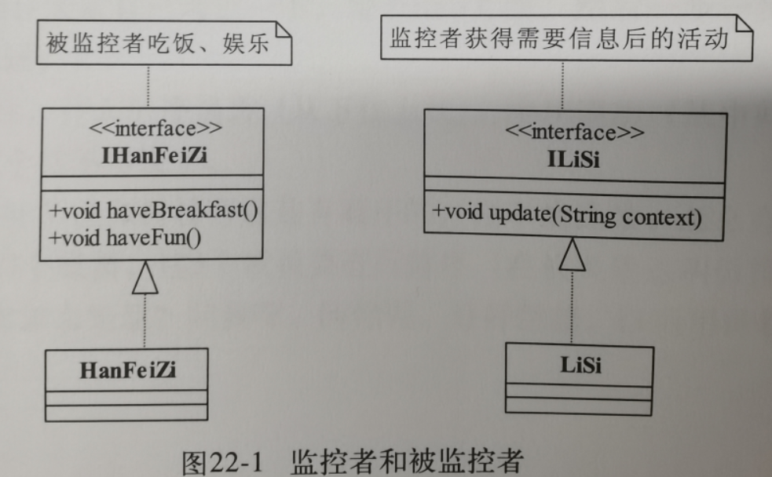

22.观察者模式
1.例子引入
故事:李斯需要监控韩非子,李斯需要不断更新韩非子的吃饭和娱乐信息.

1.直接安插间谍实时监控
Spy间谍类:
一直循环监控HanFeiZi被监控对象,只要他的状态变化,就报告给LISi监控者.
问题:现在需要间谍类一直循环监视,这意味着不断地开线程,不断地消耗资源,效率极低.
2.韩非子主动更新就发提示
现在直接韩非子声明一个LISI对象,然后有更新就发送信息给李斯.
问题:如果需要监控的对象不止李斯一个,然后监控的人也不是韩非子一个怎么办.那代码数量就会爆炸了
3.改进之后的结果
Observable被观察者接口
所有被观察者都要可以添加观察者,删除观察者,通知观察者
Observer观察者接口
观察者对象,可以对被观察者的状态变化做出操作.
2.正式定义
Define a one-to-many dependency between objects so that when one object changes, all its dependents are notified and updated automatically.
翻译:定义对象间一种一对多的依赖关系,使得每当一个对象改变状态,则所有依赖于它的对象都会得到通知并被自动更新.
Subject被观察者
需要能够添加和移除观察者,并且在有变化的时候通知所有观察者
Observer观察者
观察者对象,当被观察者通知的时候需要更新自己
3.应用
优点:
1.观察者和被观察者是抽象耦合的,所以扩展两者都非常方便
2.可以建立一套触发链.让一个信息不断往外传递形成复杂的逻辑.
缺点:
因为是一对多的关系,开发和调试会比较麻烦,然后效率较低.
使用场景:当需要事件多级触发,关联行为场景等情况
注意事项:广播链问题,不推荐消息多次转发,这会造成复杂逻辑,异步解决处理效率,然后要考虑线程安全和队列问题.